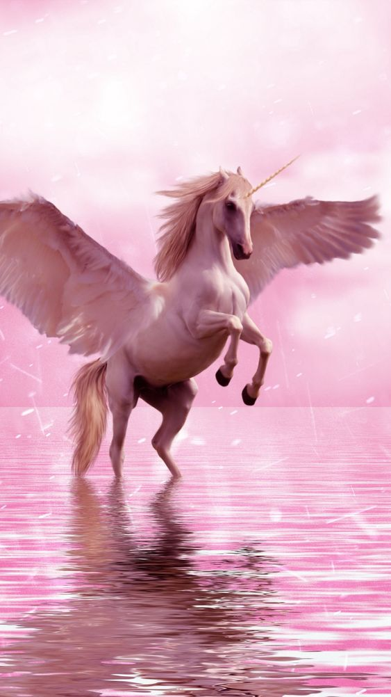
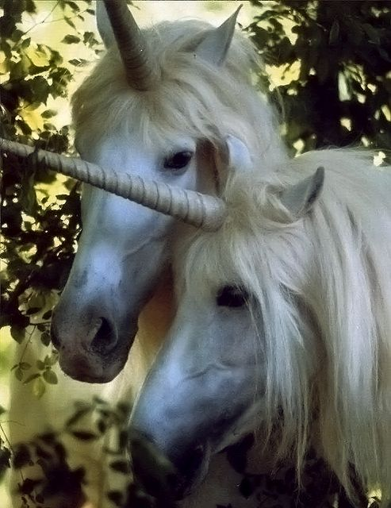

Єдиноріг, одноріг — міфічна істота, що символізує доброчесність. Зазвичай єдинорога уявляють у вигляді коня з
рогом. Згідно з езотеричними вченнями, має біле тіло, червону голову та сині очі.
Перші зображення єдинорога зустрічаються приблизно у 4 ст. до н. е. на печатках із древніх міст долини Інду.
Зустрічається в «Атхарваведі» та «Махабхараті».
Грецька й римська традиції розглядали єдинорога як реальну тварину, його
появу зв'язують із Африкою чи Індією.
Зустрічається в традиціях багатьох народів.
3a словами Карла Юнга, «Єдиноріг не є поодинокою сутністю, це — казкова
істота з численними варіаціями: наприклад, існують однорогі коні, віслюки, риби, дракони, скарабеї тощо.
Щиро кажучи, ми
маємо справу з темою єдиного pory (алікорн)»

Ha Сході єдиноріг зображався y вигляді кози, пізніше, на Заході — оленя, коня.
Єдинорога вважали істотою
чоловічої статі, пізніше — жіночої.